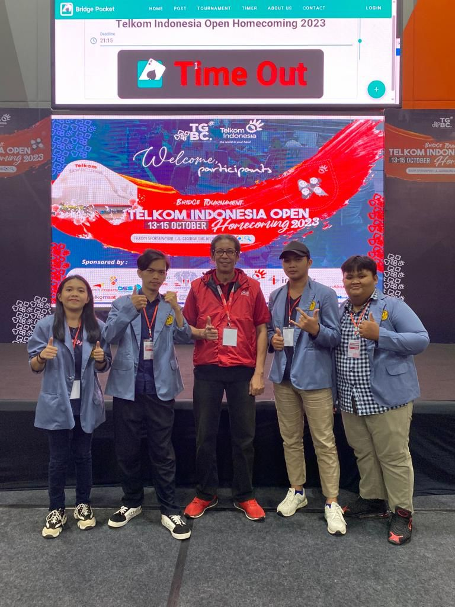

SELAMAT DATANG DI PORTOFOLIO SAYA
PROFIL
Nama : Angelica Priskila Trivena Rompas
Umur : 18 Tahun
NIM : 220211060003
Hobi : Olahraga Bridge
Saya adalah mahasiswa aktif Jurusan Teknik Informatika Universitas Sam Ratulangi angkatan 2022.
GALERY
Ini adalah foto pertandingan olahraga bridge dalam event ASIAN GAMES

Partisipasi Mahasiswa Fakultas Teknik UNSRAT dalam event TELKOM INDONESIA OPEN 2023
Pertandingan bridge yang dilaksanakan oleh UKM Bridge Fakultas Teknik Unsrat

BLOG
Ini adalah artikel untuk mengenal olahraga bridge
Kunjungi link berikutMahasiswa unsrat berpartisipasi dalam Pekan Olahraga Mahasiswa Nasional
Ada Cabang Olahraga BridgePelatihan Bridge Fakultas Teknik Unsrat
Bridge Fatek